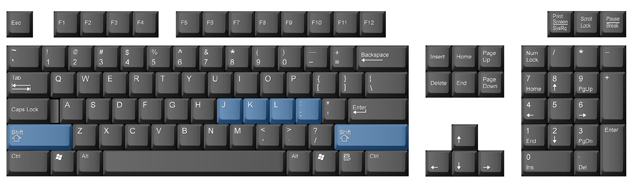
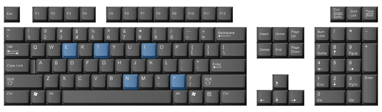

Project 1: Learning the Alphanumeric and Symbol Keys
Right-hand Home Row and Shift Keys

This lesson introduces you to the J, K, L, and semicolon keys as well as the Shift keys.
For all of the other keys that you will be learning, it is strongly suggested that you practise moving your finger from home row to the new key and back to home row several times while watching your finger make the move. Pay special attention to the distance and the direction your finger has to travel to get to the intended key. Allow your brain and the muscles in your hands to “memorize” this distance and direction because later on you won’t be looking at the keys while you are practising. As you type, envision the path your fingers make and say each letter to yourself as you strike it.
Shift key: one of several service keys that makes uppercase letters and allows characters from the top row to be typed
Now that you’ve learned the eight letters of home row, you’ll learn to use the Shift keys to make capital letters. Capital letters are called uppercase letters. Small letters are called lowercase letters.
The little finger on each hand is used to operate either Shift key. The right-hand Shift key is used if you want to capitalize a letter typed with the left hand. The left-hand Shift key is used if you want to capitalize a letter typed with the right hand.
For example, if you want to type a capital A, you will anchor on the J key (keep the J finger at home), make an extended reach to the right and downward to the right-hand Shift key, and press the A key with the little finger on your left hand. If you want a capital K, anchor on the F key, make an extended reach to the left and downward to the left-hand Shift key with the little finger on the left hand and hit the K key with the middle finger on your right hand.
Making capital letters involves the use of two keys, so it might take a bit more practice to use them proficiently. To make a capital letter, you must remember to hold the shift key down long enough for the letter key to be struck.
Follow through Practice 1 to practise using the home row keys through to the shift keys.
Left-hand Home Row
fff ddd sss aaa fff ddd sss aaa fff ddd sss aaa
Right-hand Home Row
jjj kkk lll ;;; jjj kkk lll ;;; jjj kkk lll ;;;
Remember to keep your hands on home row, tap the space bar with your right thumb, and try to memorize the keys and their locations.
Home Row Together
aaa ;;; sss lll ddd kkk fff jjj aaa ;;; sss lll ddd kkk fff jjj
fff aaa ddd fad fad aaa sss kkk ask lll sss all sad
aaa ddd lad ddd add sss aaa ;;; as; as; alas ddd dad
fad sad lad dad ask as; fall alas flask lass falls
Keep working on the home row until you can type any of these combinations without looking at your hands.
Adding Capital Letters with Shift
When you are typing capital letters, always hit the Shift key with the opposite hand. For example, if you want a capital A and are typing it with your left hand, you must press the Shift key with the right pinky finger. This is tricky, so make sure you spend some time practising.
aAa sSs dDd fFf jJj kKk lLl ;:;
Sad Fad Dad Lad Lass Flask Alaska KKK JJJ
To type in all capital letters (uppercase) without having to hold the Shift key down, press the Caps Lock key once. Only letters will be capitalized. This key does not affect number and symbol keys. Pressing the Caps Lock key a second time will turn off the capitalization function.
service key: any key that does not type a character
So far, you have learned to touch type with the left and right home row keys, the space bar, and some of the service keys, namely the Backspace, Shift, and Caps Lock keys. Now it’s time to reach out for some of the other keys, both above and below home row. As before, when you learned to use the Backspace and Shift keys, make sure you anchor on home row while you reach out for keys that are not on home row.
Reaching Other Keys from the Home-Row Position

The E Key
The E key is struck with the D finger. It is a natural reach up from the D key to the E key.
Watch your finger make the move to the E key several times, and memorize the distance and direction your D finger has to travel to reach the E key. Use the A finger or the F finger as an anchor so that you can return to home row easily.
The I Key
The I key is struck with the middle finger of the right hand. The I key is a natural reach up from the K key. Watch your finger make this path a few times, and memorize the distance and direction your finger has to travel from the K key to get to the I key.
Remember to keep one finger on or hovering just above home row so that you can always come back to home base. Either the semi finger or the J finger is the best anchor for the reach to the I key. Try each one to see which is most comfortable for you.
The T Key
The T key is struck with the F finger. This is not a natural reach. To get to the T key, your F finger has to extend upward and to the right. Again, trace out this distance and direction, and memorize it with both your brain and your hand muscles before doing the practice exercises. The A finger serves as a good anchor for the reach to the T key.
Remember to take regular breaks from typing!
The Period Key
You are now going to learn the first punctuation key that is not on home row. The period key is struck with a natural downward reach with the L finger. Anchor on the J key. A period at the end of a sentence is followed by one space (strike the space bar once with your right thumb).
The N Key
The N key is struck with the J finger. This is an unnatural reach because the J finger has to move downward and to the left. Leave at least one finger on home row as an anchor.
Follow through Practice 2 to practise the E, I T, N, and period keys just covered. Take time to review previously covered keys as well.
E, I, T, Period, and N
The E key uses the D finger (middle) on your left hand. It is a natural reach up.
ddd ded eee ddd ded eee ddd ded eee she ded led ded he; sees; she led; he led;
The I key uses the K finger (middle) on your right hand. It is a natural reach up.
kkk kik iii kkk kik iii lid kik if is; Id Sid disk kid said
The T key uses the F finger (index) on the left hand.
fff ttt fff ftf ftf ttt fff tft ftf ttt fff kit ate tie it is at
When typing a period, use the L finger (ring) on your right hand. Space once after a period at the end of a sentence, and space once after a period following an abbreviation. Space once after a semicolon.
lll l.l … lll l.l ea. St. std. Id.
The N key uses the J finger (index) on the right hand.
jjj nnn jjj nnn jnj jnj nnj nnj ten and net